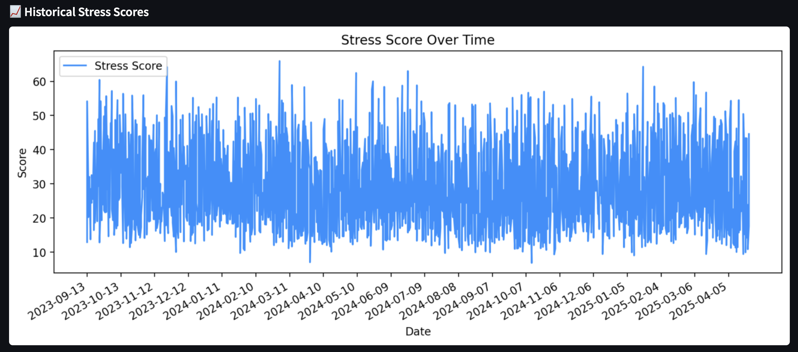

Data Scientist | Business Transformation & Analytics
Data-driven professional transitioning into data science with 20+ years of
experience in digital transformation, operations, and strategic decision-making.
Proficient in Python, SQL, data science and machine learning, with a strong ability to translate
business challenges into data-driven solutions. Passionate about leveraging analytics,
automation, and Al to optimize business processes and drive innovation.
Monitor, Predict, and Act on Mental Fatigue Before It's Too Late
PulseBurn is an interactive dashboard built to track and predict burnout risk using personal well-being data from devices like Oura, along with synthetic stress metrics. It combines historical data visualization, time-series forecasting, and deep learning predictions to give users actionable insights into their mental health trajectory.

Data Used
Oura: I used my personal Oura collected data since 04/Aug/2021 (1600 records)
the final dataset after feature selection and preprocessing bring the following features:
day
readiness_score (Oura, Garmin)
activity_score (Oura, Garmin)
sleep_score (Oura, Garmin)
stress_level (Oura)
stress_rolling_mean
stress_rolling_std
stress_rolling_min
stress_rolling_max
body_battery (Garmin)
source (Oura, Garmin or MiBand)
stress_score (Oura, Garmin)
To ensure future compatibily, I've cut the data to start only on 5/Jan/2024 when Oura started using the stress_score. Garmin, Apple and Mi Band the API usage is under negotiation. Until then we are using Sythetic generated data.
Technologies Used
Python, HTML, CSS Streamlit for Web App
Machine Learning Models (Prophet, LSTM)
Python Libraries (pandas, numpy, matplotlib, scikit-learn, keras, joblib) Time-Series Data Preparation & Scaling
Key Features
Visualize historical stress scores over time
30-day burnout risk forecast using Prophet with confidence intervals
LSTM-based deep learning model with MAE and RMSE evaluation
Set alert thresholds to flag high-risk days ahead of time
Streamlit interface for live interaction and exploration
How It Works
Loads daily stress score data and forecast CSVs
Processes time-series data into LSTM-ready format
Uses Prophet to generate forecasts with upper/lower bounds
Deep learning predictions based on sequential windows of past data
Calculates and displays error metrics like MAE and RMSE